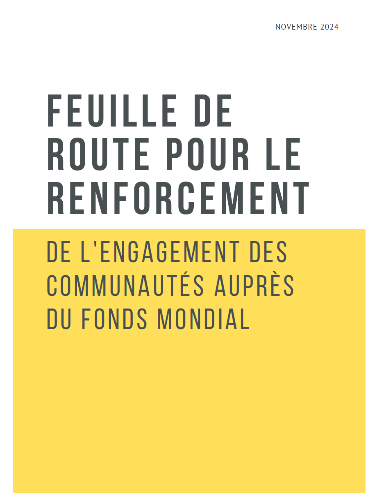
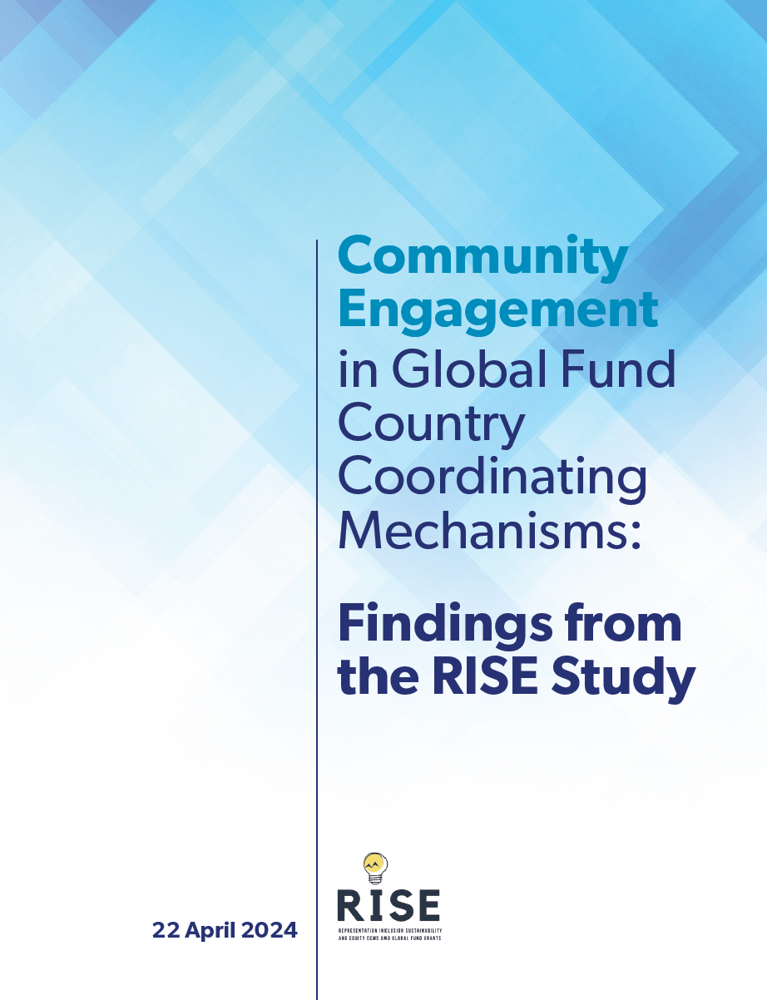
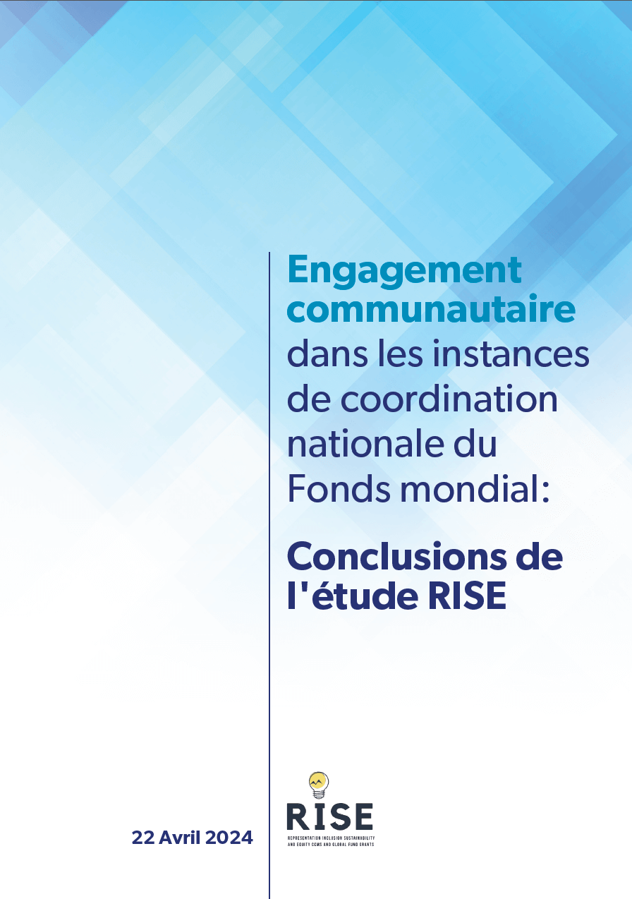
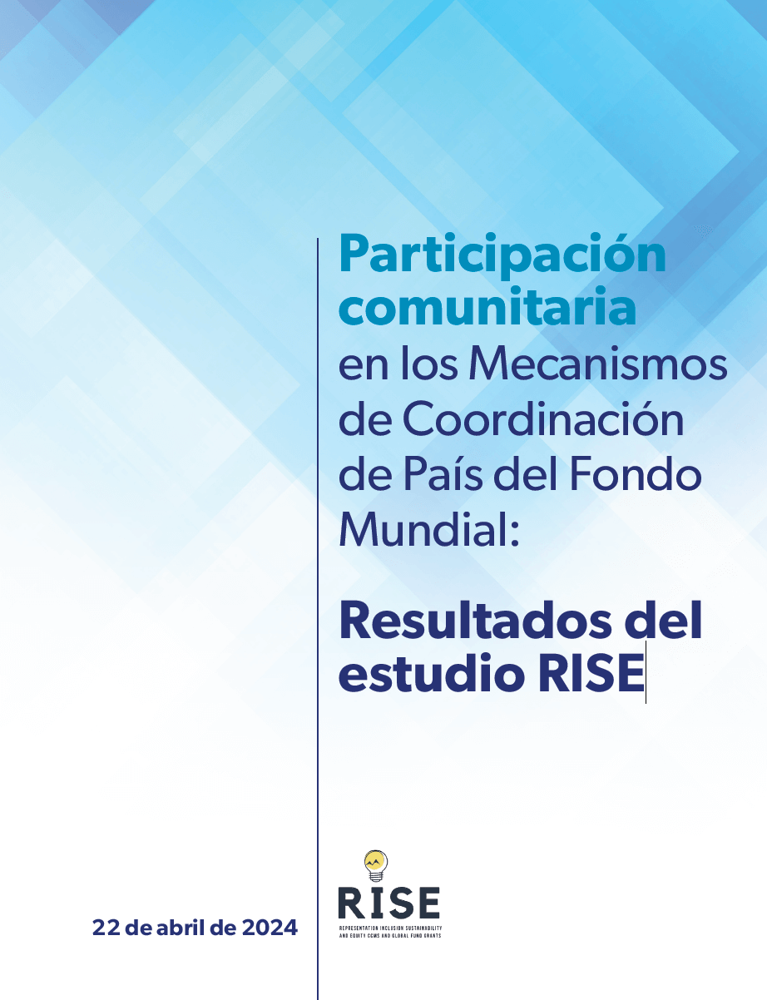
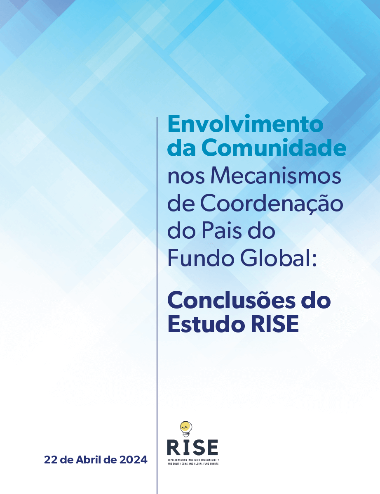
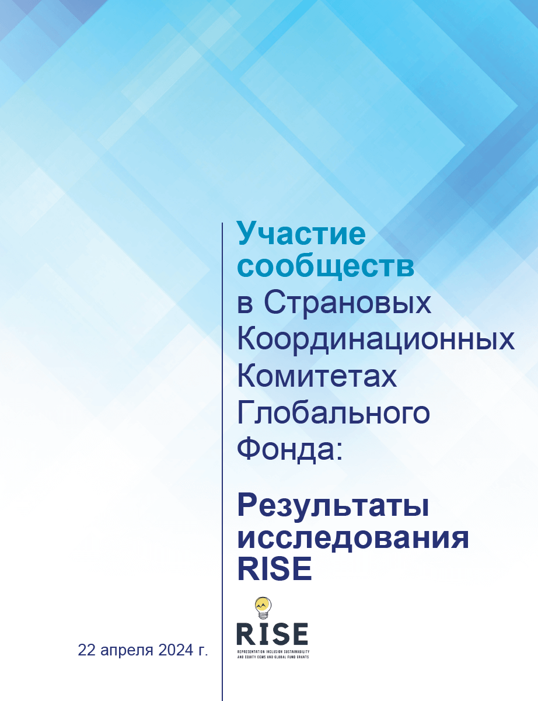

Resources
Dashboards


Guides
Reports

Feuille de route pour le renforcement de l'engagement des communautés auprès du Fonds mondial

Community engagement in Global Fund Country Coordinating Mechanisms: Findings from the RISE Study

Engagement communautaire dans les instances de coordination nationale du Fonds mondial: Conclusions de l'étude RISE

Participación comunitaria en los Mecanismos de Coordinación de País del Fondo Mundial: Resultados del estudio RISE

Envolvimento da Comunidade nos Mecanismos de Coordenação do Pais do Fundo Global: Conclusões do Estudo RISE
